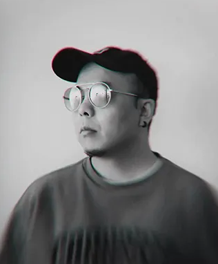
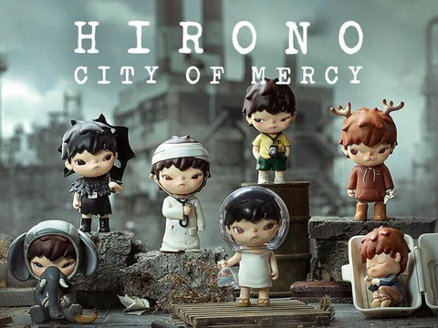
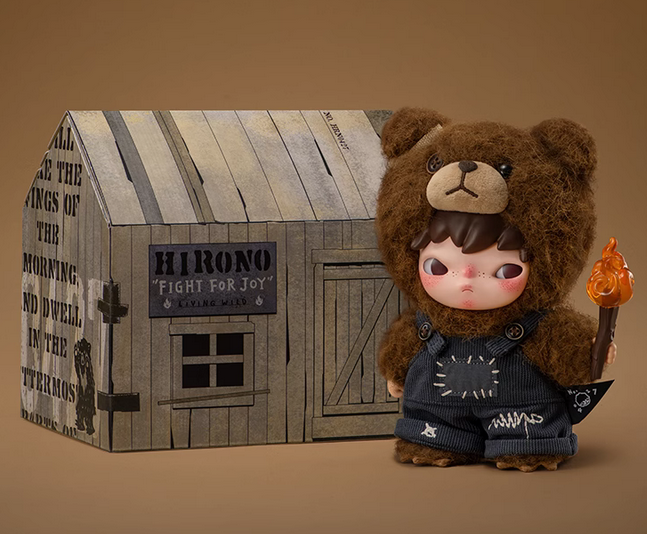

about Hirono

Lang is a Chinese artist and illustrator best known for creating Hirono. His work focuses on quiet, emotional expression, often exploring feelings like loneliness, curiosity, and inner reflection. Rather than following bold or playful trends, Lang’s style is soft and understated, inviting people to interpret the meaning for themselves. Through his collaboration with POP MART, his creations have reached a global audience while still keeping that personal, introspective tone.

City of Mercy introduces Hirono through a collection of quiet, emotional scenes set in a soft, almost dreamlike world. Each figure reflects a different feeling—gentleness, loneliness, comfort—without clearly explaining it, which makes the series feel personal and open to interpretation. The muted colors and delicate details give it a calm, slightly melancholic atmosphere. Released with POP MART, this series became the foundation of Hirono’s identity. It showed early on that Lang wasn’t trying to create something loud or trendy, but something introspective—small moments that quietly stay with you.

Lang draws much of his inspiration from quiet, everyday emotions—moments of solitude, childhood memories, and the subtle feelings people often overlook. His work reflects an interest in inner worlds rather than external events, which is why Hirono often feels introspective and deeply personal. He’s also influenced by minimalism and storytelling through small details, allowing each piece to feel open-ended and emotionally relatable. The first Hirono plush keychain, *Living Joy*, captures this idea in a gentle, understated way. Instead of showing loud happiness, it presents joy as something soft and calm—found in simple moments rather than big gestures. With its muted design and thoughtful expression, *Living Joy* reflects Lang’s belief that even quiet emotions can hold deep meaning, turning a small collectible into something that feels surprisingly human.